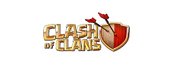

CLASH OF CLANS
The history of Clash of Clans is synonymous with the explosion of the mobile gaming industry. Developed by Supercell, a relatively small Finnish video game company at the time, the game was released for iOS in August 2012, followed by an Android release in October 2013. The mobile gaming landscape in 2012 was largely dominated by simple puzzle games and casual infinite runners. Supercell saw an opportunity to bring deeper, strategy-based mechanics—heavily inspired by early browser games like Backyard Monsters—to touchscreens. The goal was to create a game with years of progression that was accessible in short, three-minute bursts, but complex enough to reward deep tactical thinking and long-term planning.
Upon its release, Clash of Clans was an instant, phenomenal success. It rapidly climbed the App Store charts and became the highest-grossing app in the United States within months. The game's vibrant, colorful art style masked a highly addictive "freemium" core loop: build a village, wait for upgrades, attack others, and use the stolen loot to upgrade again. Players could speed up this process using "Gems," a premium currency that generated unprecedented revenue for Supercell. At its peak in 2014 and 2015, the game was reportedly generating over $5 million in revenue every single day, allowing Supercell to run massive Super Bowl commercials featuring celebrities like Liam Neeson.
A major turning point in the game's history occurred in April 2014 with the introduction of "Clan Wars." Prior to this update, the game was largely a solitary experience despite the ability to chat and donate troops to clanmates. Clan Wars allowed up to 50 players to battle another clan over a two-day period. This fundamentally shifted the game's culture, giving birth to dedicated war clans, base-building meta, and highly coordinated team strategies. It solidified the "Clash" in Clash of Clans and ensured player retention remained incredibly high by adding a massive social and competitive layer.
As the years passed, Supercell committed to a "games as a service" model, providing massive, regular updates to prevent the endgame from going stale. Originally, the maximum level was Town Hall 8. Today, the game has expanded far beyond Town Hall 16. With each new Town Hall came paradigm-shifting defenses—like the Inferno Tower, the Eagle Artillery, and eventually, the weaponization of the Town Hall itself. Supercell also introduced the "Gold Pass" in 2019, pivoting their monetization strategy to include a highly rewarding battle-pass system that revolutionized how players progressed through the game's massive upgrade timers.
Today, well over a decade after its launch, Clash of Clans remains a titan of the mobile gaming industry. It has spawned a massive cinematic universe of spin-off titles (like the wildly successful Clash Royale), boasts a thriving global e-sports scene culminating in an annual World Championship, and continues to maintain millions of daily active users. It stands as a masterclass in mobile game design, proving that a mobile title can maintain cultural relevance and a dedicated player base for generations.
Clash of Clans is a real-time strategy and base-building game. Unlike traditional PC strategy games where a match lasts an hour, your progression in Clash of Clans takes place persistently over months and years. You are the "Chief" of a village, and you must balance building an impenetrable fortress with raising a powerful army to plunder your neighbors. Here is a fully detailed breakdown of the game's mechanics, economy, and combat systems.
The fundamental rhythm of Clash of Clans revolves around generating resources to fund upgrades. Everything in your village requires one of three main resources, plus the premium currency:
While Mines and Collectors generate resources slowly, the fastest way to progress is by attacking other players to steal their Gold, Elixir, and Dark Elixir.
Your village is your sanctuary. When you go offline, other players will attack it. Your goal is to design a base that minimizes the loot they can steal and prevents them from destroying your Town Hall.
The Town Hall: The heart of your village. If an attacker destroys it, they instantly win the battle (earning one "Star"). Upgrading the Town Hall unlocks new buildings, traps, and higher upgrade levels for existing structures. Crucial Tip: Never upgrade your Town Hall until you have upgraded every single defense, troop, and wall to the maximum level allowed for your current Town Hall level. "Rushing" your Town Hall will heavily penalize your loot generation.
Defensive Structures: You have an arsenal to protect your village. Cannons and Archer Towers handle basic point-defense. Mortars and Wizard Towers deal splash damage to handle swarms of weak troops. Air Defenses are vital for shooting down Dragons and Balloons. At higher levels, you unlock devastating weapons like X-Bows (rapid fire), Inferno Towers (massive damage to high-health targets), and the Eagle Artillery (global range artillery strikes).
Walls and Compartments: The biggest mistake beginners make is putting all their buildings inside one giant square wall. Once an enemy breaks that wall, they have access to everything. A good base uses "compartments"—small cellular wall boxes that force enemies to break through multiple layers of walls to reach the center.
Offense is just as important as defense. You train troops in your Barracks and store them in Army Camps. As you upgrade your Barracks, you unlock new tiers of troops:
Alongside troops, you have the Spell Factory. Spells are dropped dynamically on the battlefield to turn the tide of war. The Lightning Spell destroys specific buildings, the Healing Spell keeps troops alive in heavy fire, the Rage Spell massively boosts troop speed and damage, and the Jump Spell allows ground troops to leap over walls.
Beginning at Town Hall 7, you unlock Heroes. These are massive, immortal units that do not need to be retrained after every battle (they just need time to sleep and recover their health). Upgrading them with Dark Elixir is the longest grind in the game, but they are the most powerful units on the battlefield.
The Barbarian King is a massive tank. The Archer Queen is a lethal sniper that can single-handedly destroy half a base if supported by Healers (a strategy known as a "Queen Charge"). Later, you unlock the Grand Warden (a support hero that grants temporary invincibility) and the Royal Champion (a defense-seeking assassin). Recently, Supercell added "Hero Equipment," allowing you to customize their special abilities—for example, giving the Barbarian King an Earthquake boot that smashes walls, or the Archer Queen a Giant Arrow that shoots across the entire map.
Combat in Clash of Clans is entirely automated once you drop a troop on the map. You cannot control them. Therefore, where and when you deploy them is the entire skill gap of the game.
Funneling: This is the most critical concept in the game. Troops will always target the closest building to them. If you drop your entire army in one spot, they will likely walk around the outside perimeter of the enemy base, getting picked off one by one by defenses. "Funneling" is the act of using a few troops to destroy the trash buildings on the left and right sides of your entry point. This creates a "funnel" or a gap in the base, forcing your main, heavy army to walk straight into the core of the enemy village where the Town Hall and most dangerous defenses are located.
Luring the Clan Castle: Enemy bases can hold defensive troops inside their Clan Castle. If you don't deal with them, a defensive Dragon or Super Minion will completely decimate your army. A common strategy is to drop one weak troop near the castle to "lure" the defenders out to the corner of the map, poison them, and kill them with your Archer Queen before deploying your main army.
You should rebuild the ruined Clan Castle on your map as soon as possible to join a Clan. Being in a clan allows you to request high-level troops from your clanmates. These donated troops are housed in your Clan Castle and can be used both defensively (to protect your village while you sleep) and offensively (as a massive reinforcement drop during your own attacks). Active clans are vital for progressing quickly, as they provide advice, high-level reinforcements, and access to Clan Wars.
While upgrading your main "Home Village" is the primary goal, Clash of Clans features several massive, secondary game modes that provide different styles of gameplay and crucial rewards to speed up your main progression.